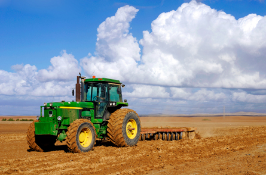

Module 8—Acid-Base Equilibrium
Lesson 1—Introduction to the Equilibrium of Acids and Bases
 Get Focused
Get Focused

© Orientaly/shutterstock
Successful farming is not just a matter of planting a crop and seeing what grows. Farming operations cannot control the weather, one key component for success, but they can improve their success by carefully managing the soil.
In the previous module you learned about chemical equilibrium and how chemical systems at equilibrium can be stressed. In this module you will learn about some of the chemical components of soil that are involved in an equilibrium system, and you will discover how some aspects of soil management focus on this equilibrium system.
One aspect of soil management is salinity, which is caused by the concentration of chloride ions in the soil. Soils that experience high saline content can appear to have abundant water, but they cannot support plant growth. In this case, the poor plant growth is due to the effect chloride ions have on the ability of plants to absorb available water. You might think that absorbing water is a simple process, but the movement of water and water's equilibrium in the cells of plant roots and in the soil can be affected by the concentration of chloride ions.
In this lesson you will learn about the equilibrium that exists within water and how this equilibrium is influenced by the presence of acids and bases within an aqueous system.
Consider the following questions as you complete Lesson 1:
- What is the hydronium ion and how does it account for the properties of acidic solutions?
- What chemical components are part of the equilibrium of water?
- How does the equilibrium of water affect the calculation of pH?
 Module 8: Lesson 1 Assignment
Module 8: Lesson 1 Assignment
There is no assignment for this lesson.
There are other questions in this lesson that are not marked by the teacher; however, you should still answer these questions. The Self-Check, Try This, and other types of questions are placed in this lesson to help you review important information and build key concepts that may be applied in future lessons. You should record the answers to all the questions in the lesson and place those answers in your course folder.
After a discussion with your teacher, you must decide what to do with the questions that are not part of your assignment. For example, you may decide to submit the responses to Try This and other questions that are not marked to your teacher for informal assessment and feedback. Your answers are very important to your teacher. They provide your teacher with information about your learning, and they help your teacher identify where adjustments to your instruction may be necessary.